Les Guides · Arts de la table
La table de NoëlChic et simple
« Convier quelqu'un, c'est se charger de son bonheur pendant tout le temps qu'il est sous notre toit. »
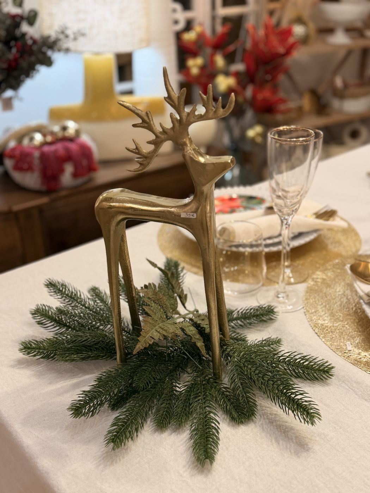
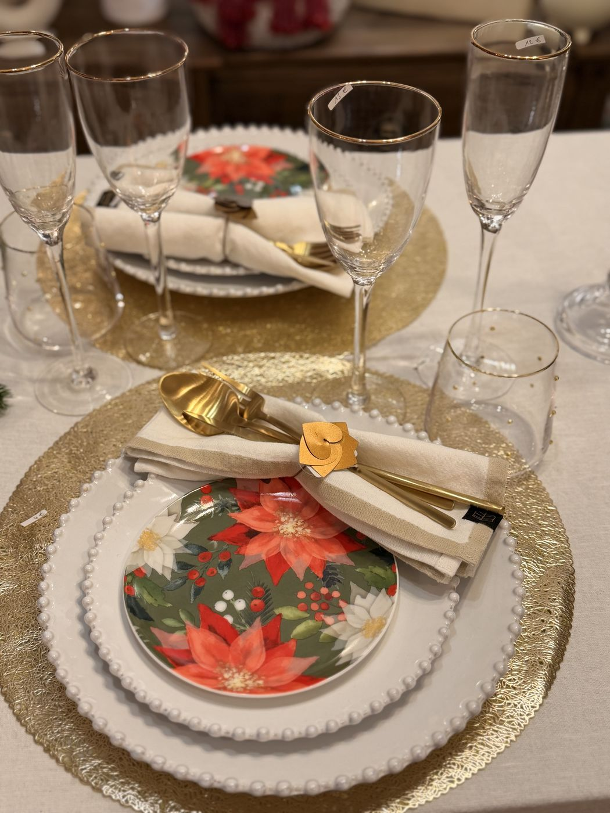
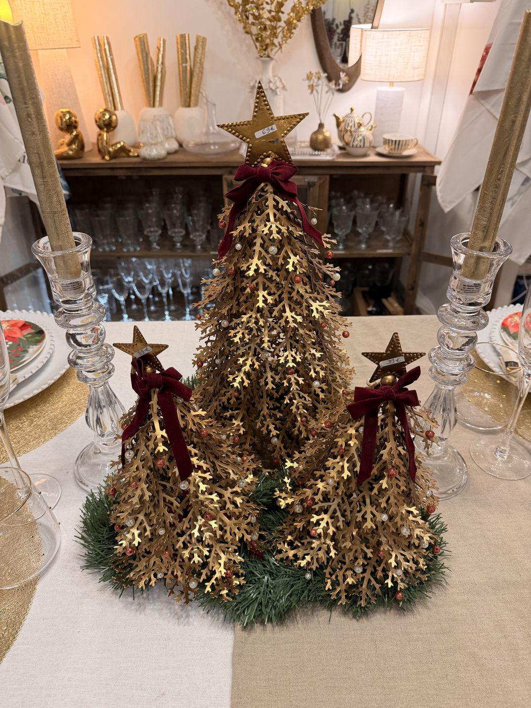
Une belle table de Noël n'a pas besoin d'être chargée. Pour moi, elle est chic et simple : quelques belles pièces, des détails soignés, et de l'espace pour respirer. Voici la table que nous avons dressée à la boutique cette année, et ce qui a guidé chacun de nos choix.
Lucie
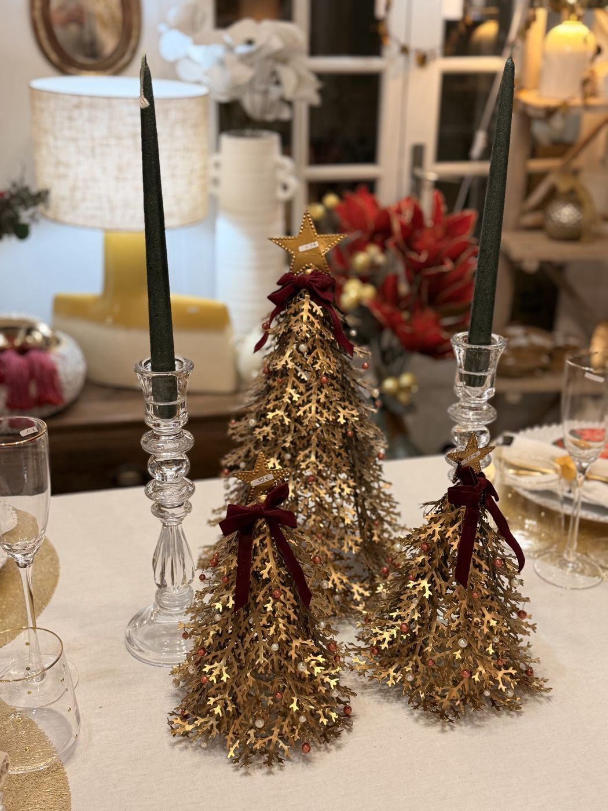
I
Quelles couleurs pour une table de Noël ?
Chacun voit la couleur à sa façon. Pour moi, Noël garde ses couleurs traditionnelles : le rouge, le vert, le blanc, et le doré, que j'utilise pour le côté festif, le petit coup de peps.
Mais on peut les revisiter de façon plus moderne. Je pars d'une base chaleureuse et naturelle, que je viens égayer de touches festives et colorées : des sets dorés, des chandelles à piles, de petits sapins en métal doré, des rennes dorés élancés, chics et modernes.
Quatre couleurs, ce n'est pas trop, à condition de les harmoniser. Le chic, lui, vient de l'espace : une table aérée, qui respire, jamais surchargée pour rien.
L'astuce de LucieUn coup de chic, un coup de peps, mais de l'air : j'aime garder la tradition dans les couleurs, et laisser de l'espace entre les objets.
Deux nappes, deux ambiances
Nous avons fait un choix : dresser la même table en deux versions, avec exactement les mêmes objets. D'un côté, une nappe couleur lin, naturelle. De l'autre, une nappe blanche. Toutes deux sont bordées d'une bande dorée.
La version blanche est plus classique, plus lumineuse, un peu plus contemporaine. C'est souvent la nappe que l'on a déjà chez soi. La version lin est plus chaleureuse, plus organique : c'est notre préférée. Le choix dépend surtout de votre intérieur et de vos goûts.
Et une bonne nappe se garde toute l'année : ici, elle fait Noël grâce aux objets posés dessus, mais elle habillera la table en toute saison.
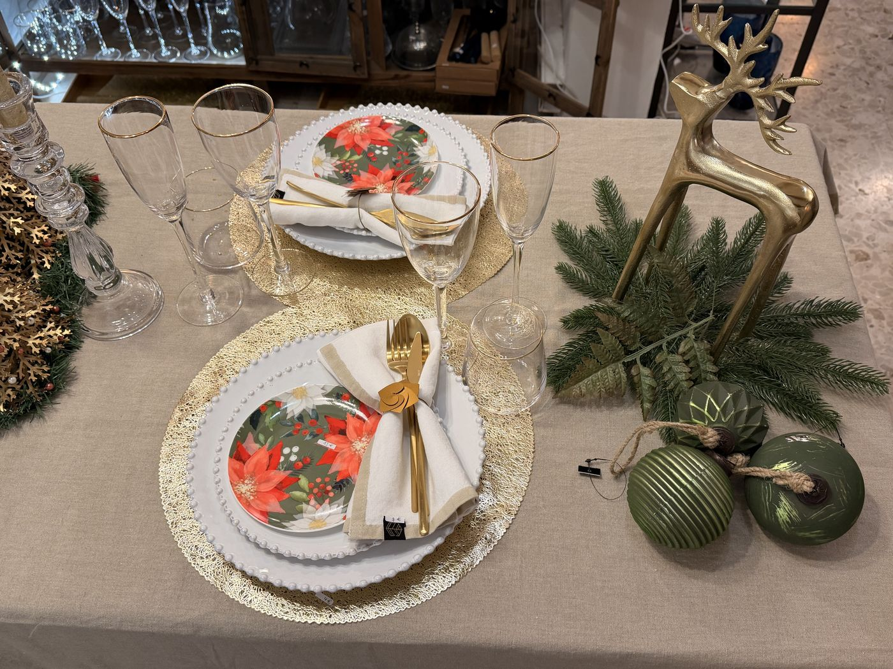
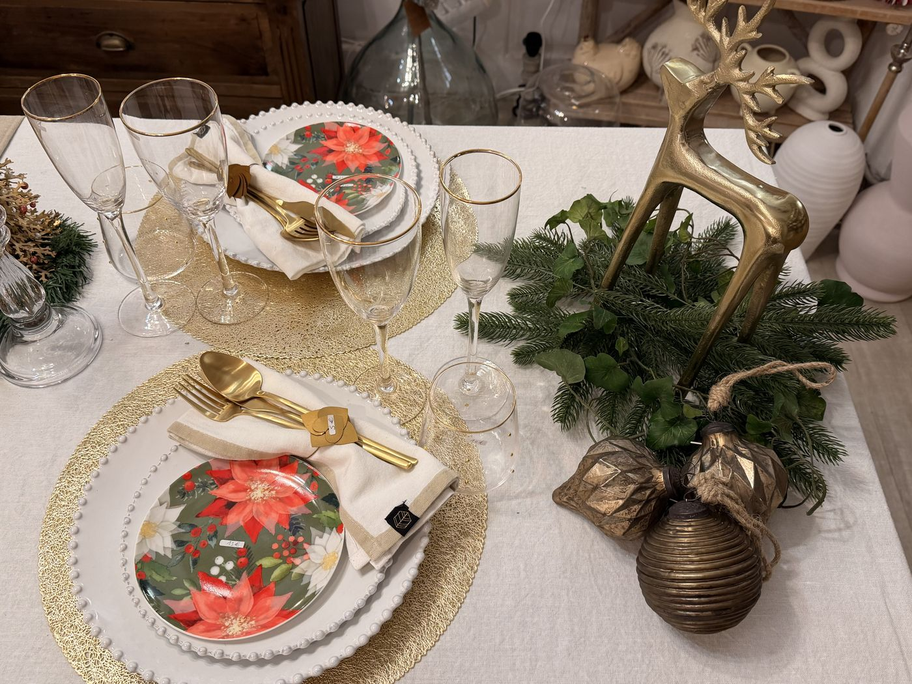
II
Où placer les verres et les couverts ?
La table « à la française » suit quelques règles simples. Elles rendent le repas plus confortable : chacun trouve ce dont il a besoin, dans l'ordre où il en a besoin.
- L'assiette à deux doigts du bord de la table, bien au centre de la chaise.
- Les fourchettes à gauche, dents tournées vers la nappe ; le couteau à droite, lame vers l'assiette.
- La cuillère à soupe, s'il y a une entrée liquide, à droite du couteau.
- Les couverts à dessert au-dessus de l'assiette : fourchette manche à gauche, cuillère manche à droite.
- Les verres en ligne au-dessus de l'assiette, du plus grand au plus petit, de gauche à droite : eau, vin rouge, vin blanc. La flûte se place juste derrière.
- L'assiette à pain en haut à gauche, au-dessus des fourchettes.
- La serviette pliée sur l'assiette, ou à gauche des fourchettes.
On pose les couverts dans l'ordre du repas : ceux de l'entrée à l'extérieur, ceux du plat contre l'assiette.
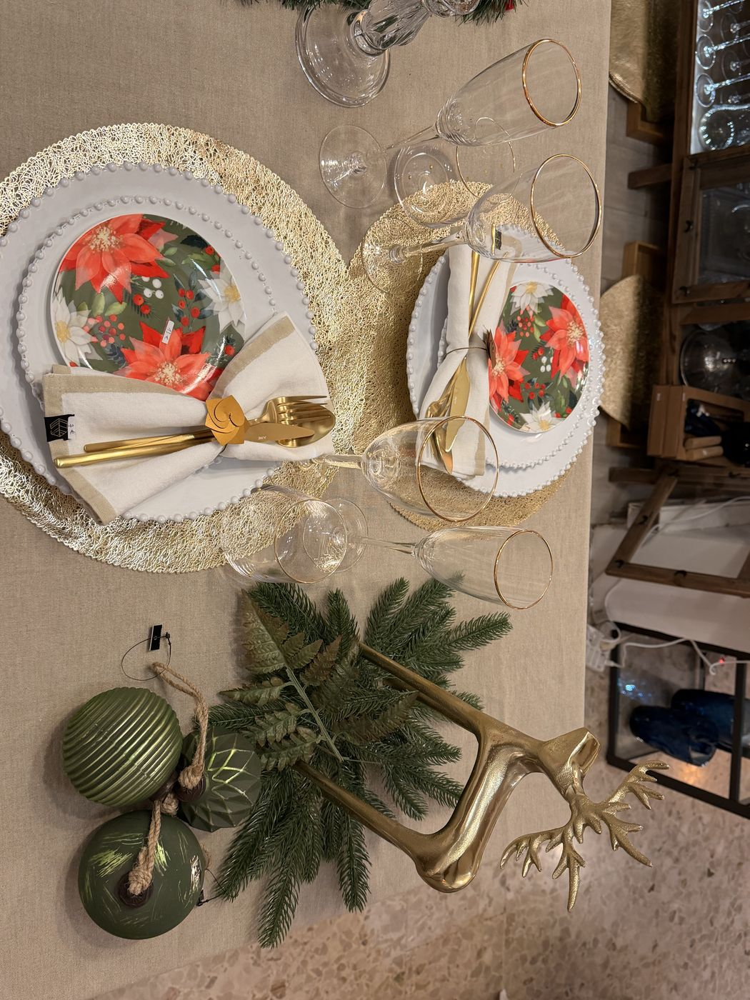
Notre mise en place, un peu plus moderne
Pour notre table, j'ai un peu bousculé la règle. La fourchette, le couteau et la cuillère dorés sont posés sur la serviette, glissés sous le rond de serviette, presque emballés. Les verres se rangent en diagonale au-dessus de l'assiette, à droite.
Rien n'est laissé au hasard : le fin liseré doré des verres répond à la bordure dorée des nappes, aux sets et aux couverts. C'est ce fil doré qui relie toute la table.
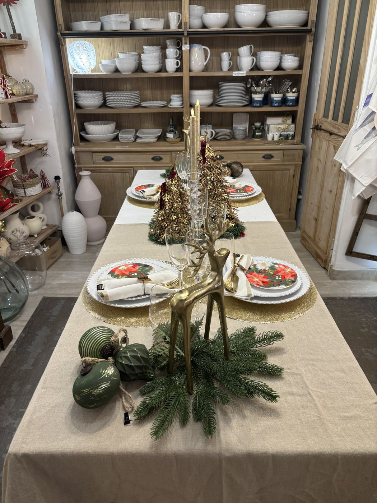
III
Quel centre de table choisir ?
C'est la question que tout le monde se pose.
Si vous avez de la place et que vous n'êtes pas trop nombreux, j'aime bien choisir une ou deux pièces qui ont du caractère, presque statuaires : les sapins en métal doré, ou les rennes dorés, élancés, chics et modernes, qui donnent de la hauteur et du chic à la table.
Si vous êtes nombreux, des objets plus fins, qui prennent moins de place, conviennent mieux. Ou bien un simple petit chemin de verdure au milieu de la table, avec de petites bougies posées çà et là. Je les prends à piles : on évite tout risque de feu, surtout avec des enfants.
Et pourquoi pas décentrer ? Quand on est nombreux, le milieu n'a pas besoin d'être encombré. À sept, par exemple : trois d'un côté, trois de l'autre, et un convive seul en bout de table. J'installe alors en face de lui, à l'autre bout, les objets qui donnent de la hauteur et habillent la table. Il a quelque chose de beau à regarder, le milieu reste libre, et la table prend du volume.
L'astuce de LuciePour moi, mieux vaut une belle pièce qui fera le centre de table que des ronds de serviette : pour ceux-là, on peut toujours trouver une astuce.
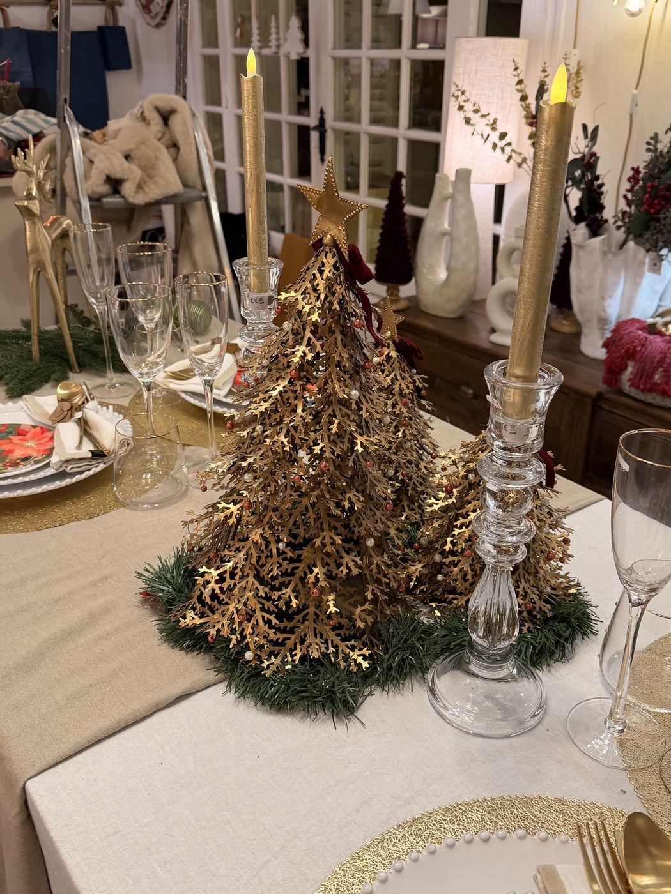
IV
La lumière, surtout
Les bougies, c'est un must de Noël. Elles apportent tout de suite de la chaleur : c'est vraiment le chic de Noël.
Sur notre table, ce sont de grandes chandelles dorées à piles, posées sur des bougeoirs en verre. Avec des enfants autour de la table, on est tranquille, et la flamme fait très bien illusion.
V
Les petites attentions
Je suis très fan des petites attentions. Ce n'est pas parce qu'on n'a pas de rond de serviette qu'on ne peut pas faire un joli nœud avec un petit lien : avec un peu d'astuce, on fait une belle table sans tout acheter.
Plutôt qu'un rond de serviette, j'aime attacher autour de la serviette, avec une petite cordelette, un petit sujet en métal, plat et fin. Un casse-noisette, une chouette, un cœur doré : chacun repart avec un souvenir de ce Noël. C'est une attention très délicate.
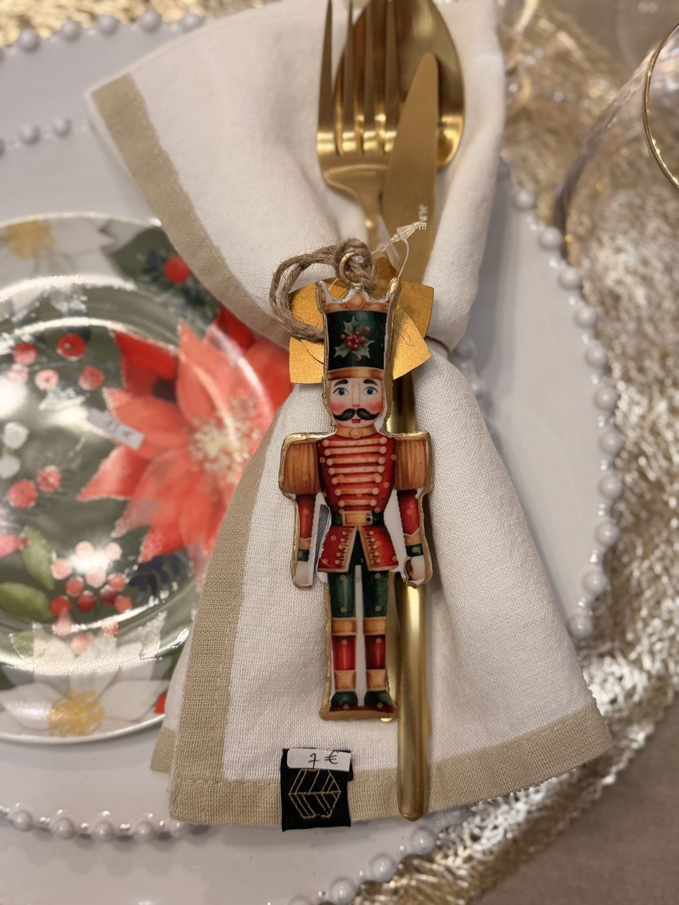
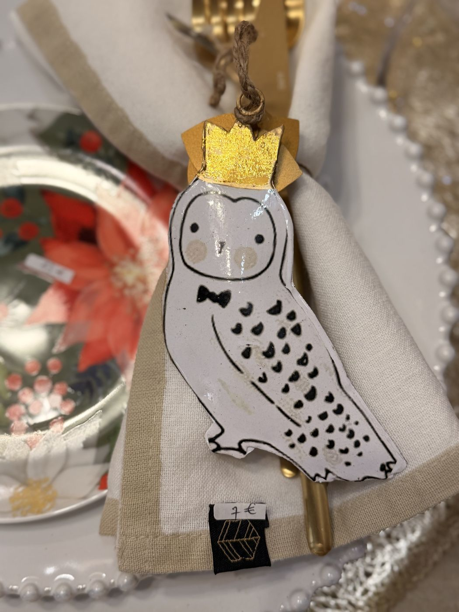
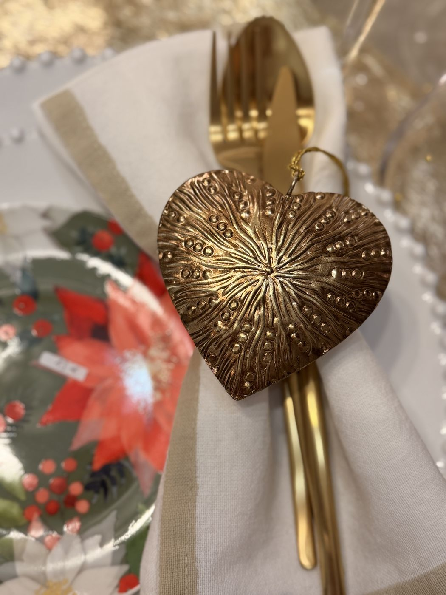
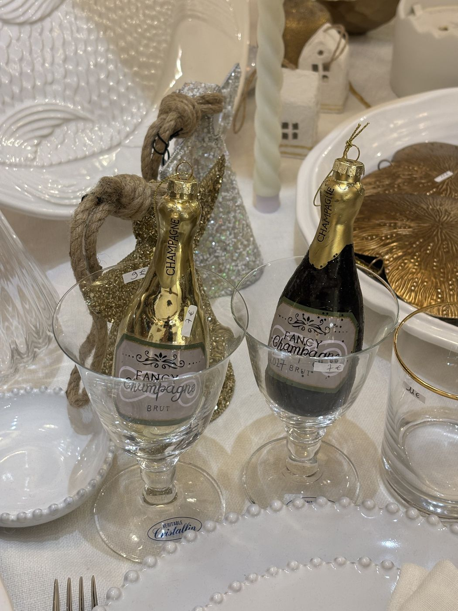
Et pour le réveillon
J'ai trouvé quelque chose que j'adore : de petites bouteilles de champagne à suspendre. Je ne les imagine pas dans un sapin, je les pose plutôt dans les verres. C'est joyeux, c'est festif, et à la fin chacun repart avec la sienne. On peut même écrire l'année dessus.
Un petit mot écrit à la main pour chacun, une petite boule de Noël au creux de la serviette… Il y a tellement de choses à faire.
À retrouver à la boutique